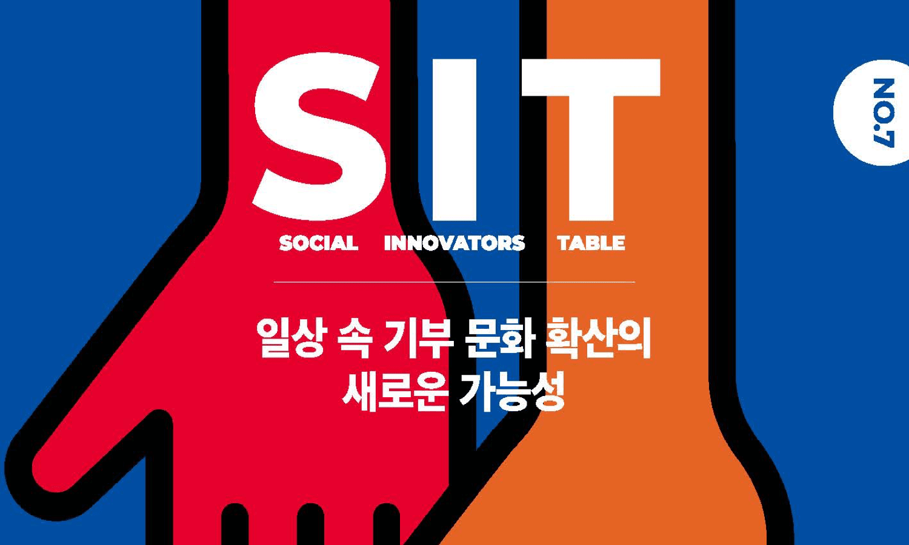
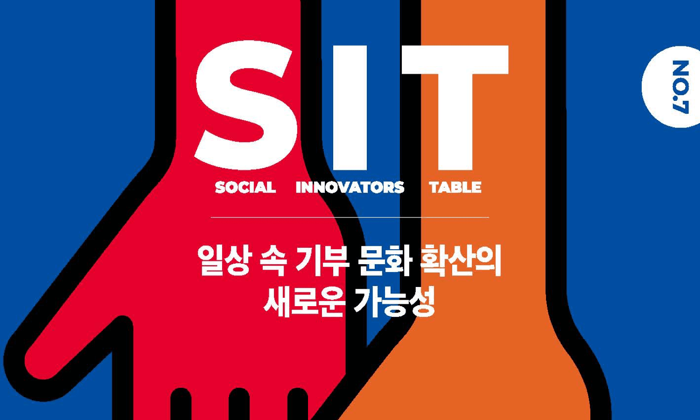
7th SIT conference
일상 속 기부 문화 확산의 새로운 가능성
일곱 번 째 컨퍼런스에서는 “일상 속 기부 문화확산의 새로운 가능성”에 대한 이야기를 나누어 보았습니다. ＜유니크굿컴퍼니＞ 이은영 대표는 시각장애인의 영상 컨텐츠 접근성을 개선하는 새로운 더빙 플랫폼 ‘헬렌’을 통해 누구나 손쉽게 목소리 기부에 참여할 수..
project
쉽고 즐거운 일상 속 참여가
새로운 기부 문화를 만든다.
영국에서 시작된 ‘마이크로 볼런티어링 Micro- Volunteering)’이라는 개념이 있는데요, 환경을 생각해 일회용 빨대를...
story
목소리로 나눔을 실천하는
오픈 더빙 솔루션
영국에서 시작된 ‘마이크로 볼런티어링 Micro- Volunteering)’이라는 개념이 있는데요, 환경을 생각해 일회용 빨대를...
conference
블록체인 기반의
현물기부 플랫폼
영국에서 시작된 ‘마이크로 볼런티어링 Micro- Volunteering)’이라는 개념이 있는데요, 환경을 생각해 일회용 빨대를...
story
기부의 미래를
바꾸는 블록체인
영국에서 시작된 ‘마이크로 볼런티어링 Micro- Volunteering)’이라는 개념이 있는데요, 환경을 생각해 일회용 빨대를...
conference
아이디어도 기부가
될 수 있을까?
영국에서 시작된 ‘마이크로 볼런티어링 Micro- Volunteering)’이라는 개념이 있는데요, 환경을 생각해 일회용 빨대를...
conference
연결을 위한
또 하나의 테이블
영국에서 시작된 ‘마이크로 볼런티어링 Micro- Volunteering)’이라는 개념이 있는데요, 환경을 생각해 일회용 빨대를...
ON THE TABLE
금융. 한자로 금융은 금을 녹인다는 뜻이죠.
녹으면 흐를 수 있고, 흐르면 퍼질 수 있습니다. 금융은 기회와 자본을 연결해
우리가 사는 세상을 더 활기차게 만들어야 할 사회적 책임이 있습니다.
Watch
-
SIT 네번째 모임
Talk유니크굿컴퍼니, 프리즈밍,와디즈,
한국모금가협회의 대표님들 -
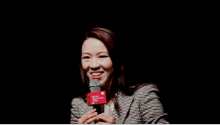
사회적기업의
사회혁신세상을 위한 행복솔루션 사회혁신 /
Chapter 4가 드디어 시작되었.. -
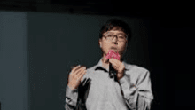
SIT 다섯번째 모임
Talk팜프라, 소풍가는 고양이,세상을 품은
아이들 pathmakersd의..
8TH SIT CONFERENCE
장애의 경계를 허무는 새로운 가능성
오파테크, 코액터스, 키뮤, 예술을 만나는 가장 멋진 방법
+더 많은 Watch 보기
- 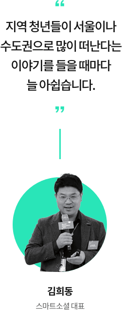
- 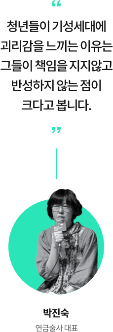
- 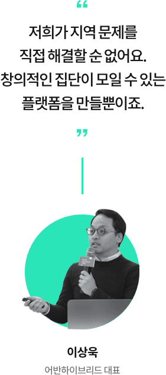
SIT 커뮤니티
SIT는 소셜이노베이터들이 네트워킹하여 정보와 아이디어를 공유하는 플랫폼입니다.
함께 해결할 소셜이노베이터 파트너를 커뮤니티에서 만나보세요.
- 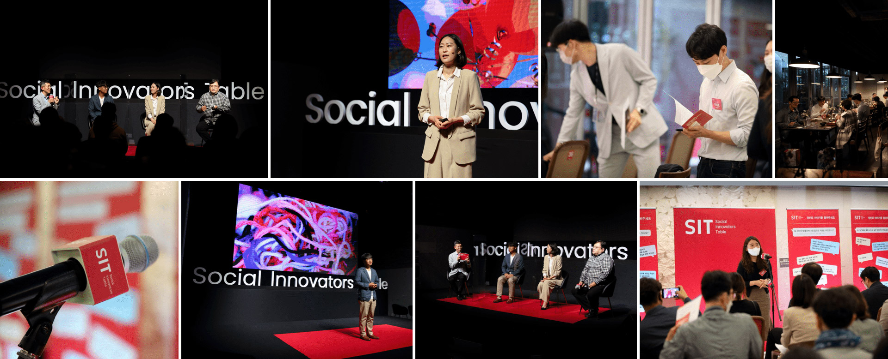 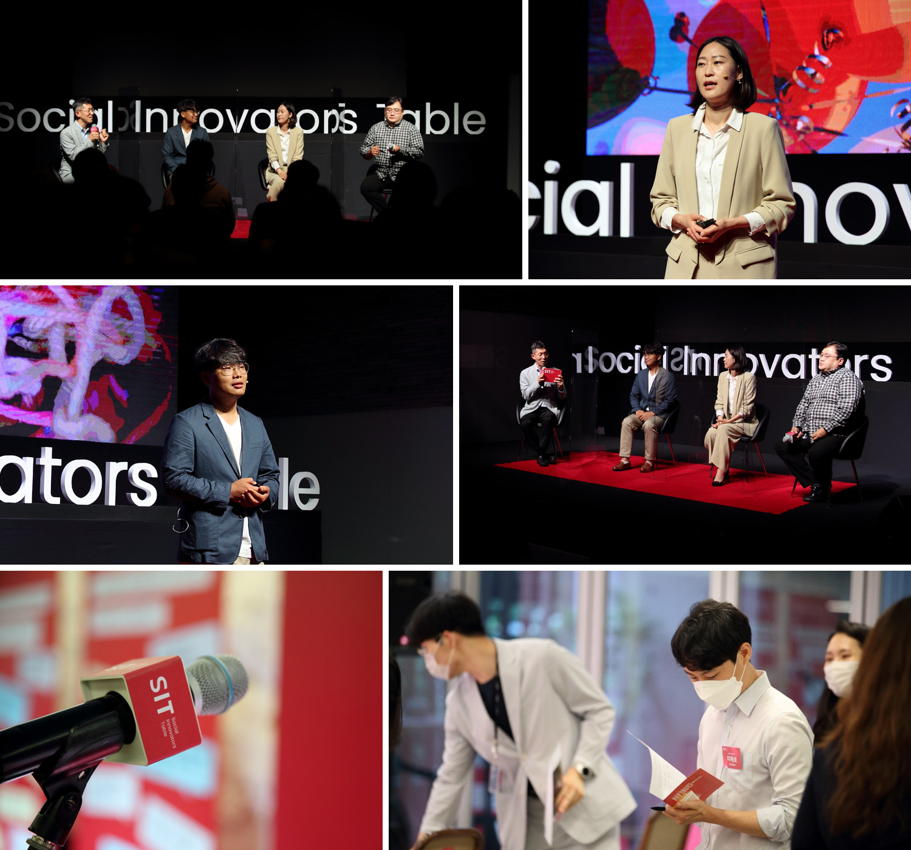
- 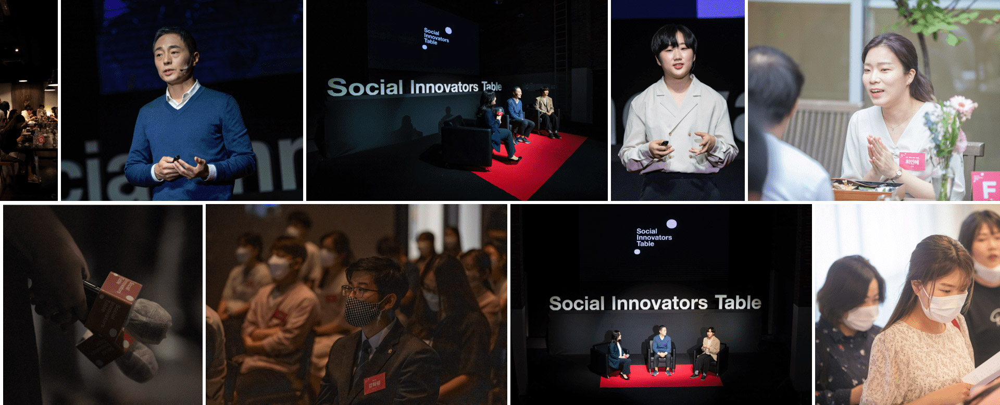 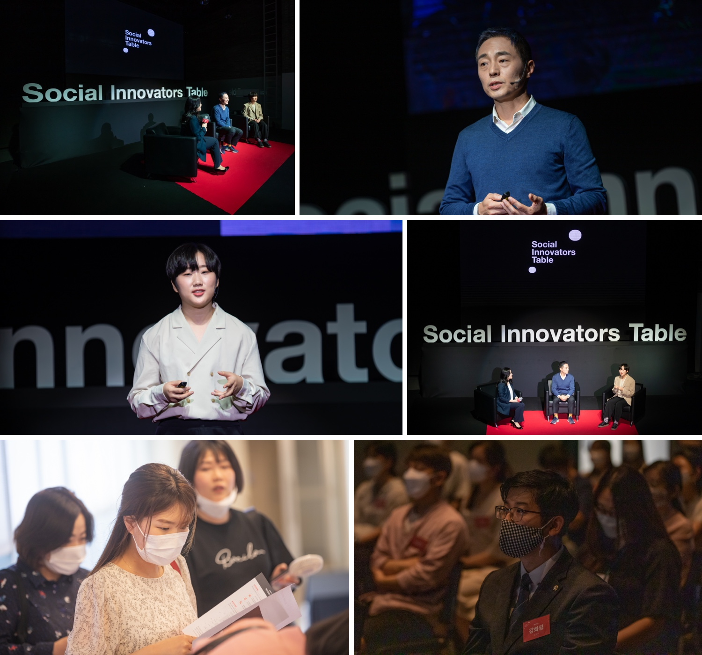
- 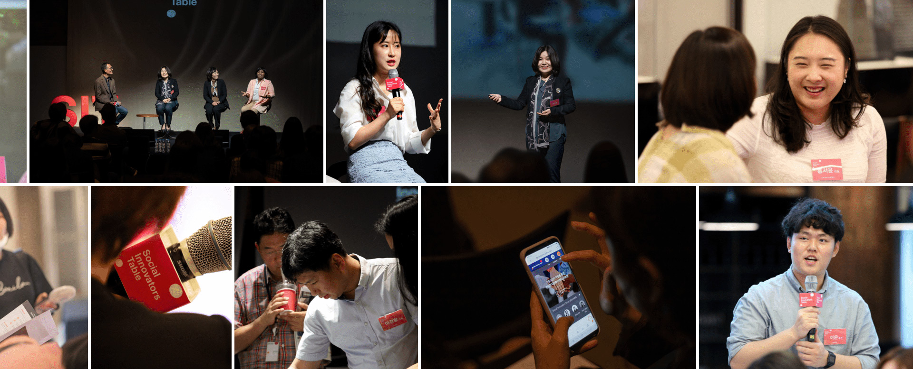 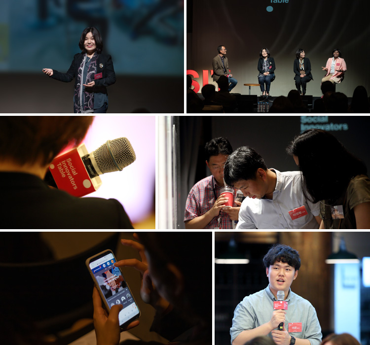
What We Do
SIT Conference
연 3회 세 번의 Social Innovators Table
Conference 개최하여 매 회 주제에 맞춰
사회 혁신의 방안에 대해 논의 합니다.
SIT Project
연 3회 세 번의 Social Innovators Table
Conference 개최하여 매 회 주제에 맞춰
사회 혁신의 방안에 대해 논의 합니다.
SIT Magazine
연 3회 세 번의 Social Innovators Table
Conference 개최하여 매 회 주제에 맞춰
사회 혁신의 방안에 대해 논의 합니다.